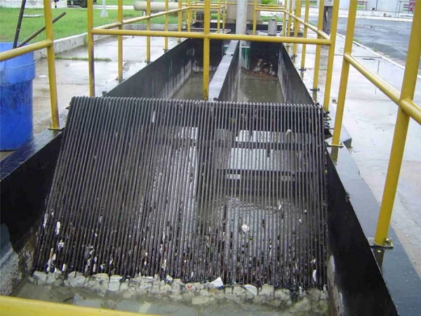

A primeira etapa da estação de tratamento é a partir da gradeação impedindo que dejeitos com uma expessura elavada sejam intersectados pela grade.
Na nossa Estação de Tratamento de Efluentes (ETE), empregamos dois tipos de gradeamento: um com aberturas largas e outro com aberturas de tamanho intermediário. Ambos são essenciais para garantir que a velocidade da água se mantenha entre 0,6 metros por segundo e 1 metro por segundo.

Fonte Sistema Auxiliar a Projetos de Estações de Tratamento de Esgotos Compactas - SAPETEC
Utilizando a fórmula de cálculo (Q = A * V), onde Q representa a vazão, A é a área e V é a velocidade, é viável determinar que a área necessária é de 1,1575 m² (0,0926 m³/s = A * 0,8). Contudo, é essencial fazer um ajuste de 50% na grelha para permitir a passagem da água, o que significa que a área necessária se torna 0,2315 m² (0,11575 / 0,5).
Por último, é necessário realizar o ajuste da área e das barras. O espaçamento entre as barras é de 8 cm e a espessura das barras é de 8 mm. Primeiro, consideramos metade do espaçamento, que é igual a 0,04 m, e aplicamos o mesmo valor para a espessura das barras, resultando em 0,008 m. Somamos esses dois valores e elevamos ao quadrado para obter a área total, que resulta em 0,023 m² ou 23 * 10^-4 m². Em seguida, dividimos esse valor pela área pela qual a água passará. Aplicando o mesmo procedimento, encontramos um valor de 16 * 10^-4. Dividindo esses dois valores, obtemos 1,44 m.
Multiplicando a área total por 1,44 para incorporar o ajuste das barras juntamente com a passagem da água, obtemos um valor de 0,33336 m². Ao aplicar a operação de raiz, podemos determinar que as dimensões de altura e largura do gradeamento serão de 0,57737 metros, e vale ressaltar que parte do gradeamneto fica submerso no nosso projeto ele ficara a metade da altura total ou seja 0,28869 metros.(NBR 12208)